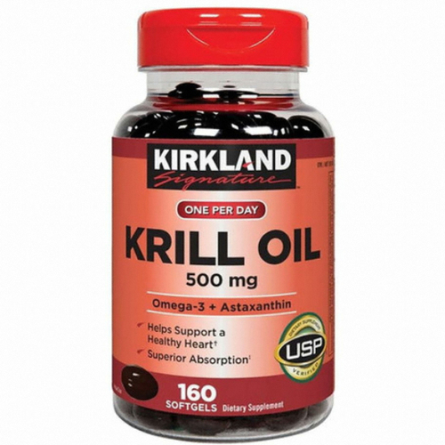

- 
-
- 카테고리
- 종합비타민
건강한 간 밀크씨슬
- 13위
- 120건
- ㈜서흥 (84종 제조)
- 1,200원
- 15종
-
기능성 원료 및 영양소
- 실리마린
125mg - 마그네슘
- 프로바이오틱스
-
일반 원료 및 영양소
- 실리마린
125mg - 마그네슘
- 프로바이오틱스
- - 실리마린
125mg
- 실리마린
- 2일/1회/7캡슐
- 없음
-
미승인 원료없음
- 미승인 원료가 없습니다.
식품 부적합 해당사항1건
- 식품유형 프로바이오틱스
- 시험항목 프로바이오틱스 수
회수·판매중지1건
-
회수사유
기준규격 부적합
(프로바이오틱스수 기준규격 미달)
식품이력정보 조회3건
- 식품이력번호 5036818182115 (19/04/29제조)
* 이 정보는 식품이력관리시스템의 제품명 조회를 통한 식품이력관리번호 안내 결과입니다.
유통기한이 1년 이상 지난 제품은 검색하실 수 없습니다.